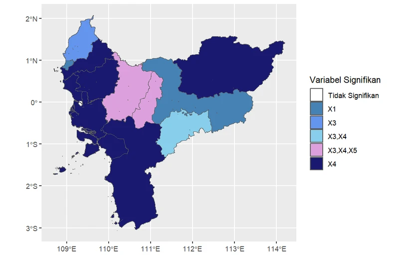
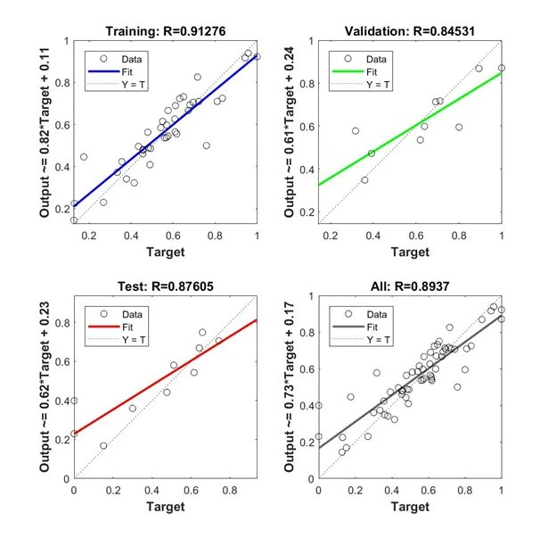
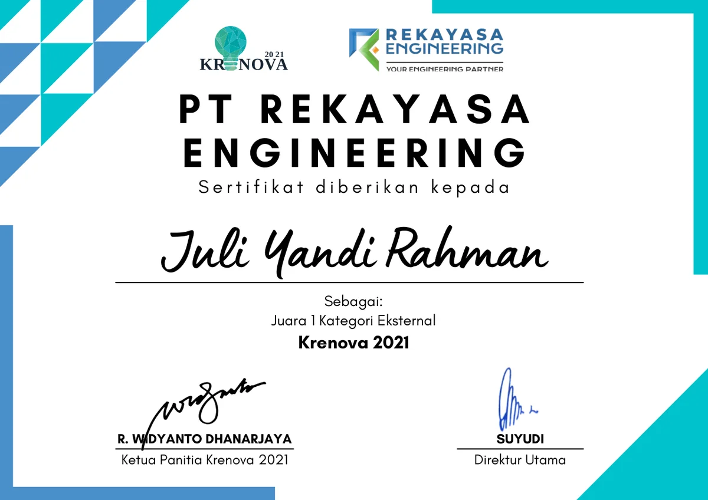
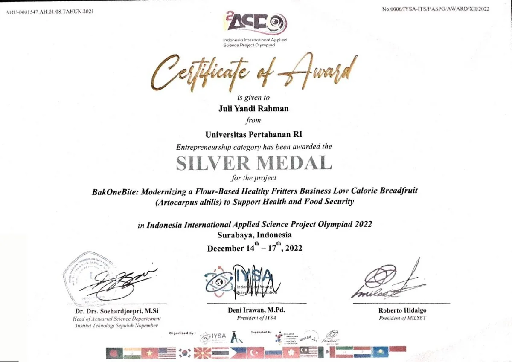
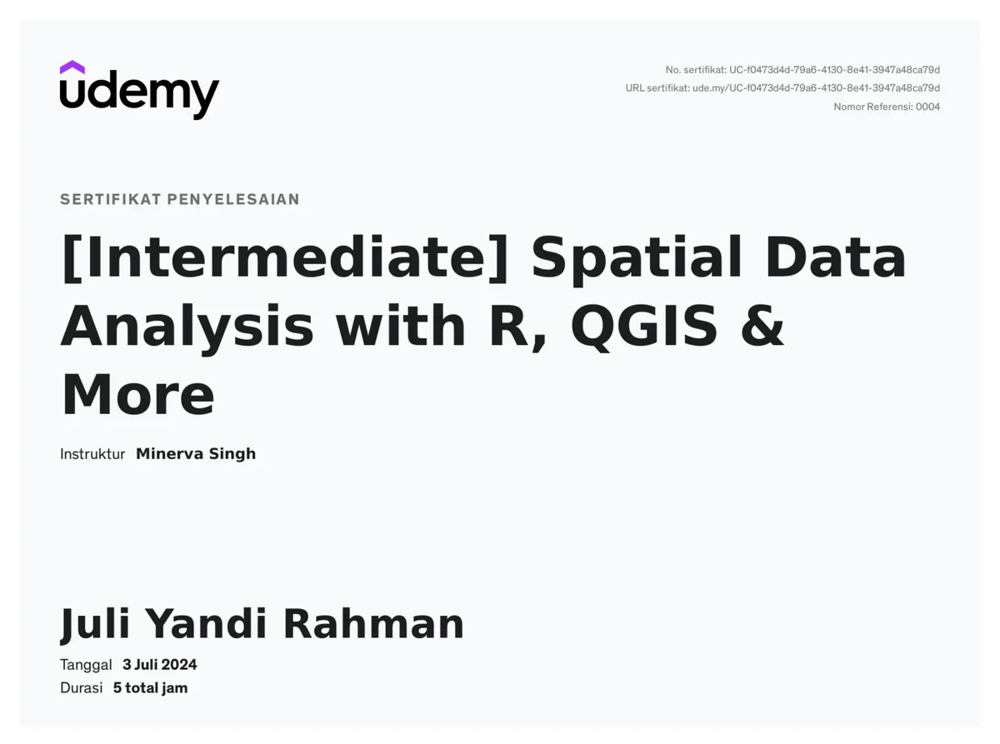
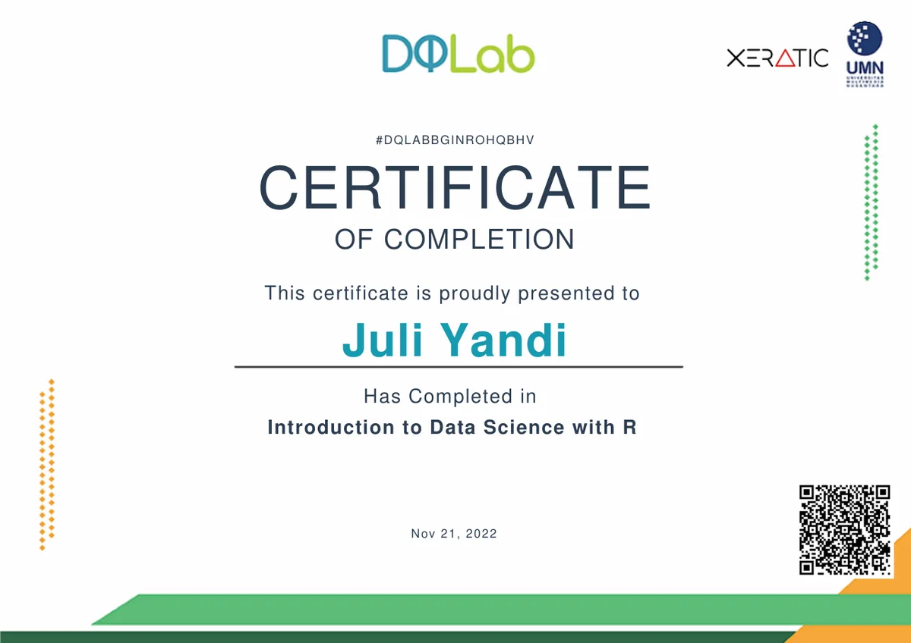

Data yang kamu pahami sampai angka terakhir.
Saya Juli, konsultan riset dengan 280+ proyek sejak 2023. Olah data, konsultasi, dan tutoring, dijelaskan sampai kamu bisa membelanya sendiri.
Paham dulu, yakin kemudian.
y = 0,79 + 0,90xR² = 0,97n = 14
Tarik sebuah titik, atau pilih dengan Tab lalu geser dengan tombol panah.
Sejak Maret 2023 saya sudah menyelesaikan 280+ proyek riset, dari pemodelan statistik dan machine learning sampai analisis sentimen.
Pilih variabel layananmu.
Pilih jenis layanan dan deadline. Pesan WhatsApp-nya tersusun sendiri, tinggal kirim.
Olah data dan bimbingan statistik
- Uji statistik dengan SPSS, R, Python, EViews, Stata, SmartPLS, atau AMOS.
- Regresi, data panel, deret waktu, model spasial.
- Hasil dijelaskan dengan bahasa yang bisa kamu ucapkan sendiri.
- Simulasi tanya jawab sidang sampai kamu siap.
Konsultasi riset dan analisis data
- Rancangan penelitian, pemilihan variabel dan metode.
- Statistik dan machine learning, termasuk klasifikasi, klaster, analisis sentimen.
- Ringkasan temuan dan visualisasi untuk laporan atau dashboard.
Tutoring matematika, pemrograman, dan bahasa Inggris
- Jadwal dan jumlah sesi disepakati lewat WhatsApp.
- Materi mengikuti kurikulum dan targetmu. Kamu yang mengerjakan soal, saya yang menjelaskan caranya.
- Dari dasar pemrograman sampai data science.
Contoh pekerjaan.
Dua hasil dari portofolio saya: pemodelan geografis dan jaringan saraf tiruan.


Yang saya kerjakan dan yang tidak.
Saya kerjakan
- Mengolah dan menganalisis datamu.
- Menjelaskan setiap langkah dan hasilnya.
- Memeriksa metode, variabel, dan interpretasimu.
- Simulasi tanya jawab sidang sampai kamu siap.
Tidak saya kerjakan
- Mengubah atau mengarang data supaya hasilnya bagus.
- Menjanjikan hasil analisis tertentu sebelum datanya diolah.
Alur kerja
- Kirim kebutuhan dan deadline lewat WhatsApp.
- Terima ruang lingkup dan harga tertulis.
- Pekerjaan berjalan, setiap langkah dijelaskan.
- Tanya jawab sampai kamu paham.
Saya Juli Yandi Rahman, S.Mat.
Dari 2023 sampai 2026 saya konsultan riset pengolahan data statistik di Educativa ID. Saya mengolah data klien dengan regresi, klasterisasi, dan machine learning, lalu mempresentasikan hasilnya dan menjawab pertanyaan lewat pertemuan online.
- Pendidikan
- S-1 Matematika, Universitas Pertahanan Republik Indonesia. IPK 3,56, 2020 sampai 2024.
- Riset
- Program riset di Badan Riset dan Inovasi Nasional (BRIN), 2023. IPK 4,00.
- Alat
- R, Python, SPSS, EViews, Stata, Minitab, SmartPLS, AMOS, JASP, MATLAB, QGIS. Sebagian analisis terbuka di 303 repositori GitHub.
- Bahasa
- Indonesia (bahasa ibu), Inggris (fasih secara profesional), Jepang (aktif).
Publikasi
- Bayesian Spatial Hierarchical Mixture Models for Excess Zeros Data: Review and Application to Female Lymphatic Filariasis Cases. Communications in Mathematical Biology and Neuroscience, 2024, penulis kedua. Terindeks Scopus.
- The Influence of Climate Change and Country-based Conflict on Crop Production: Evidence based on Global Panel Data in The Last Decade. Desimal: Jurnal Matematika (SINTA 3), 2023, penulis pertama.
Sertifikat dan penghargaan.
Ketuk sertifikat untuk melihat versi penuhnya.
-

Juara 1 kategori eksternal, Krenova 2021.
-

Medali perak kategori kewirausahaan, Indonesia International Applied Science Project Olympiad 2022.
-

Intermediate Spatial Data Analysis with R, QGIS & More, Udemy, Juli 2024.
-

Introduction to Data Science with R, DQLab, November 2022.


Juga: Aptis, British Council Indonesia (Agustus 2024). Sharing session TSDN 2022 tentang R Programming for Machine Learning dan Cleansing Your Data using Python. Pelatihan Pengantar MBKM BRIN (2023). Pemakalah di Young Scholar Symposium on Science and Mathematics Education 2023.
Kata klien.
Kutipan asli, dalam bahasa Inggris.
“The research consultation service exceeded my expectations. Juli helped me structure my thesis, clarify my variables, and apply the right statistical methods.”
“As someone with limited background in research methodology, I found Juli’s support invaluable.”